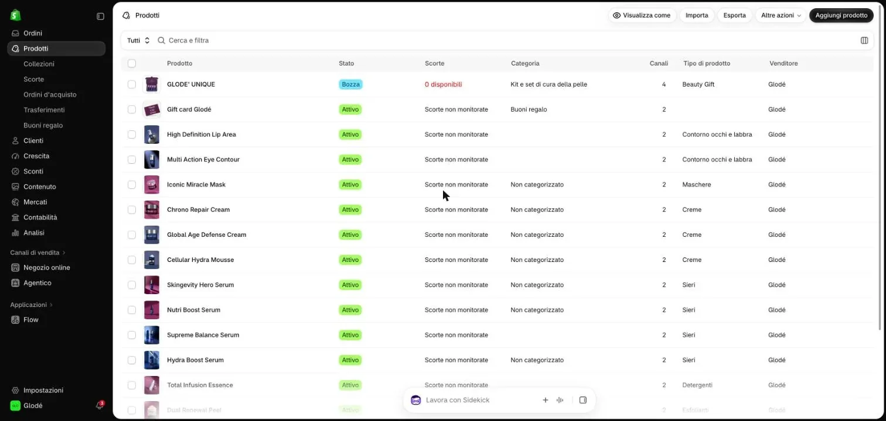
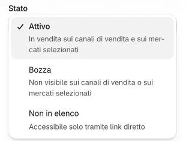
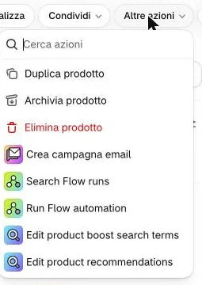
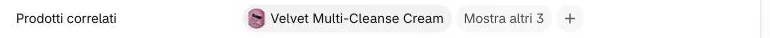
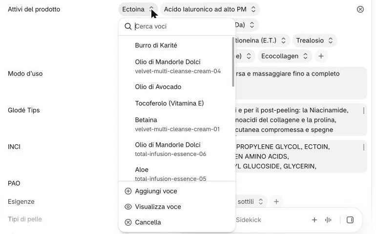
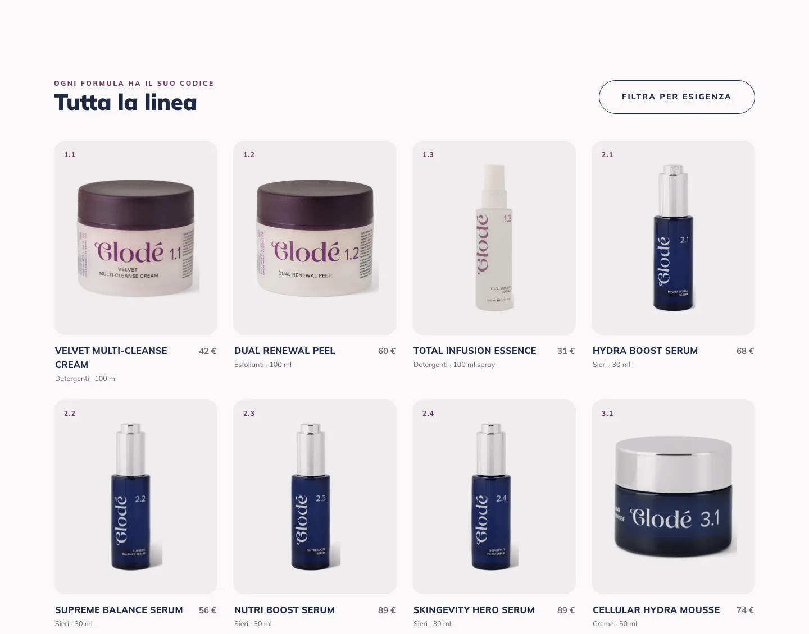

-
Cliccate «Prodotti» e aprite il prodotto.

1 -
Mettete lo «Stato» su «Bozza», poi cliccate «Salva».

2E «Non in elenco»?
Non usatelo per togliere un prodotto: resta raggiungibile da chiunque abbia il link diretto.
-
Se non tornerà più, invece, aprite «Altre azioni» in alto a destra e scegliete «Archivia prodotto».

Non qui 3Bozza o archivio?
Bozza: sparisce dal sito ma resta tutto, pronto per tornare. Archiviato: non è più in vendita, ma resta nel pannello con tutti i suoi dati. Nel menu «Stato» l’archivio non c’è: sta in «Altre azioni».
Perché non «Elimina prodotto»?
Si perderebbero foto, testi e collegamenti, e le sue recensioni e i suoi attivi resterebbero nel pannello senza prodotto. Non si torna indietro.
-
Se era fra i «Prodotti correlati» di altri prodotti, aprite quei prodotti e cliccate la sua voce nel campo.

Non vedo il prodotto nel campo
Il campo chiuso mostra solo la prima voce: cliccate «Mostra altri 3» per vederle tutte.
-
Nel menu che si apre cliccate «Cancella» in fondo, poi «Salva».

Non qui Non qui 5Perché non scelgo un altro prodotto dall’elenco?
L’elenco del menu mostra le voci di tutti i prodotti: cliccarne una sostituisce quella che avete cliccato. Qui serve solo «Cancella», che toglie quella voce e basta.
Il ⊗ che compare in fondo a destra passando con il mouse sulla riga svuota tutto il campo: non usatelo.
«Prodotti correlati» decide «Completa il rituale» in fondo alla scheda: meglio che non proponga un prodotto che non c’è più.

Sul sito
Al ricaricamento il prodotto sparisce dalla sua scheda, dalle collezioni, dal menu e dalla home. Rimettendolo «Attivo» torna com’era.